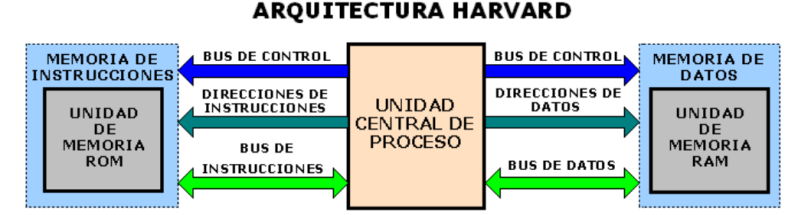
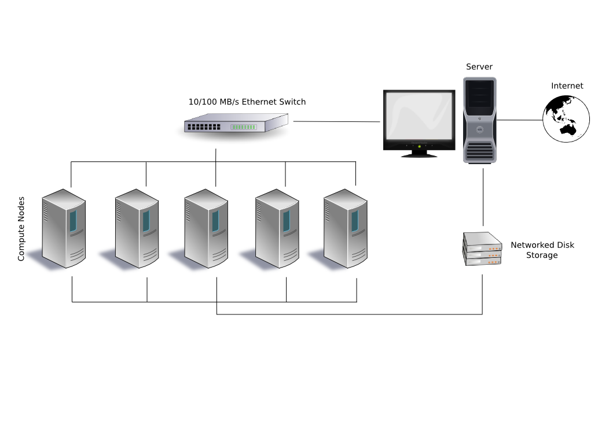
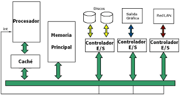

Arquitectura Mauchly-Eckert (Von Newman) Esta arquitectura fue utilizada en la computadora ENIAC. Consiste en una unidad central de proceso que se comunica a través de un solo bus con un banco de memoria en donde se almacenan tanto los códigos de instrucción del programa, como los datos que serán procesados por este. Esta arquitectura es la más empleada en la actualidad ya, que es muy versátil. Ejemplo de esta versatilidad es el funcionamiento de los compiladores, los cuales son programas que toman como entrada un archivo de texto conteniendo código fuente y generan como datos de salida, el código máquina que corresponde a dicho código fuente (Son programas que crean o modifican otros programas). Estos datos de salida pueden ejecutarse como un programa posteriormente ya que se usa la misma memoria para datos y para el código del programa.
 Figura 1.1.1.2 Diagrama a bloques de la arquitectura Von Newman.
Figura 1.1.1.2 Diagrama a bloques de la arquitectura Von Newman.
La principal desventaja de esta arquitectura, es que el bus de datos y direcciones único se convierte en un cuello de botella por el cual debe pasar toda la información que se lee de o se escribe a la memoria, obligando a que todos los accesos a esta sean secuenciales. Esto limita el grado de paralelismo (acciones que se pueden realizar al mismo tiempo) y por lo tanto, el desempeño de la computadora. Este efecto se conoce como el cuello de botella de Von Newman. En esta arquitectura apareció por primera vez el concepto de programa almacenado.
Anteriormente la secuencia de las operaciones era dictada por el alambrado de la unidad de control, y cambiarla implicaba un proceso de recableado laborioso, lento (hasta tres semanas) y propenso a errores. En esta arquitectura se asigna un código numérico a cada instrucción. Dichos códigos se almacenan en la misma unidad de memoria que los datos que van a procesarse, para ser ejecutados en el orden en que se encuentran almacenados en memoria. Esto permite cambiar rápidamente la aplicación de la computadora y dio origen a las computadoras de propósito general.
Mas a detalle, el procesador se subdivide en una unidad de control (C.U.), una unidad lógica aritmética (A.L.U.) y una serie de registros. Los registros sirven para almacenar internamente datos y estado del procesador. La unidad aritmética lógica proporciona la capacidad de realizar operaciones aritméticas y lógicas. La unidad de control genera las señales de control para leer el código de las instrucciones, decodificarlas y hacer que la ALU las ejecute.
Arquitectura Harvard Esta arquitectura surgió en la universidad del mismo nombre, poco después de que la arquitectura Von Newman apareciera en la universidad de Princeton. Al igual que en la arquitectura Von Newman, el programa se almacena como un código numérico en la memoria, pero no en el mismo espacio de memoria ni en el mismo formato que los datos. Por ejemplo, se pueden almacenar las instrucciones en doce bits en la memoria de programa, mientras los datos de almacenan en ocho bits en una memoria aparte.
 Figura 1.1.1.2 Diagrama a bloques de la arquitectura Harvard
El hecho de tener un bus separado para el programa y otro para los datos permite que se lea el código de operación de una instrucción, al mismo tiempo se lee de la memoria de datos los operados de la instrucción previa. Así se evita el problema del cuello de botella de Von Newman y se obtiene un mejor desempeño. En la actualidad la mayoría de los procesadores modernos se conectan al exterior de manera similar a a la arquitectura Von Newman, con un banco de memoria masivo único, pero internamente incluyen varios niveles de memoria cache con bancos separados en cache de programa y cache de datos, buscando un mejor desempeño sin perder la versatilidad.
1.1.2 Arquitecturas Segmentadas. Las arquitecturas segmentadas o con segmentación del cauce buscan mejorar el desempeño realizando paralelamente varias etapas del ciclo de instrucción al mismo tiempo. El procesador se divide en varias unidades funcionales independientes y se dividen entre ellas el procesamiento de las instrucciones. Para comprender mejor esto, supongamos que un procesador simple tiene un ciclo de instrucción sencillo consistente solamente en una etapa de búsqueda del código de instrucción y en otra etapa de ejecución de la instrucción. En un procesador sin segmentación del cauce, las dos etapas se realizarían de manera secuencial para cada una de las instrucciones, como lo muestra la siguiente figura.
En un procesador con segmentación del cauce, cada una de estas etapas se asigna a una unidad funcional diferente, la búsqueda a la unidad de búsqueda y la ejecución a la unidad de ejecución. Estas unidades pueden trabajar en forma paralela en instrucciones diferentes. Estas unidades se comunican por medio de una cola de instrucciones en la que la unidad de búsqueda coloca los códigos de instrucción que leyó para que la unidad de ejecución los tome de la cola y los ejecute. sta cola se parece a un tubo donde las instrucciones entran por un extremo y salen por el otro. De esta analogía proviene el nombre en inglés: Pipelining o entubamiento.
Completando el ejemplo anterior, en un procesador con segmentación, la unidad de búsqueda comenzaría buscando el código de la primera instrucción en el primer ciclo de reloj. Durante el segundo ciclo de reloj, la unidad de búsqueda obtendría el código de la instrucción 2, mientras que la unidad de ejecución ejecuta la instrucción 1 y así sucesivamente. En este esquema sigue tomando el mismo número de ciclos de reloj (el mismo tiempo), pero como se trabaja en varias instrucciones al mismo tiempo, el número promedio de instrucciones por segundo se multiplica. La mejora en el rendimiento no es proporcional al número de segmentos en el cauce debido a que cada etapa no toma el mismo tiempo en realizarse, además de que se puede presentar competencia por el uso de algunos recursos como la memoria principal. Otra razón por la que las ventajas de este esquema se pierden es cuando se encuentra un salto en el programa y todas las instrucciones que ya se buscaron y se encuentran en la cola, deben descartarse y comenzar a buscar las instrucciones desde cero a partir de la dirección a la que se saltó. Esto reduce el desempeño del procesador y aún se investigan maneras de predecir los saltos para evitar este problema.
1.1.3 Arquitecturas de Multi-procesamiento. Cuando se desea incrementar el desempeño más aya de lo que permite la técnica de segmentación del cauce (limite teórico de una instrucción por ciclo de reloj), se requiere utilizar más de un procesador para la ejecución del programa de aplicación. Las CPU de multiprocesamiento se clasifican de la siguiente manera (Clasificación de Flynn): ● SISO – (Single Instruction, Single Operand) computadoras Monoprocesador ● SIMO – (Single Instruction, Multiple Operand) procesadores vectoriales, Exenciones MMX ● MISO – (Multiple Instruction, Single Operand) No implementado ● MIMO – (Multiple Instruction, Multiple Operand) sistemas SMP, Clusters, GPUs
Procesadores vectoriales – Son computadoras pensadas para aplicar un mismo algoritmo numérico a una serie de datos matriciales, en especial en la simulación de sistemas físicos complejos, tales como simuladores para predecir el clima, explosiones atómicas, reacciones químicas complejas, etc., donde los datos son representados como grandes números de datos en forma matricial sobre los que se deben se aplicar el mismo algoritmo numérico. La mayoría de los procesadores modernos incluye algunas instrucciones de tipo vectorial, tales como las extensiones al conjunto de instrucciones tales como MMX y SSE. Estas instrucciones les permiten procesar flujos multimedia más eficientemente.
Los Procesadores Digitales de Señales (DSP), son procesadores especializados en el procesamiento de señales tales como audio, vídeo, radar, sonar, radio, etc. Cuentan con instrucciones tipo vectorial que los hace muy aptos para dicha aplicación. Suelen utilizarse en conjunto con un microcontrolador en dispositivos como reproductores de audio, reproductores de dvd y Blueray, teléfonos celulares, sistemas de entretenimiento, sistemas de adquisición de datos, instrumentos médicos, controles industriales, etc. En los sistemas SMP (Simetric Multiprocesesors), varios procesadores comparten la misma memoria principal y periféricos de I/O, Normalmente conectados por un bus común.
Se conocen como simétricos, ya que ningún procesador toma el papel de maestro y los demás de esclavos, sino que todos tienen derechos similares en cuanto al acceso a la memoria y periféricos y ambos son administrados por el sistema operativo. Pueden formarse con varios núcleos en un solo circuito integrado o con varios circuitos integrados en una misma tarjeta madre. La primera opción ha sido popularizada al hacerse más económicos los procesadores multinucleo de los principales fabricantes y con su uso en sistemas de gama media y baja, e inclusive en teléfonos celulares y tabletas. La segunda opción fue la que se uso en un principio y sigue siendo usada en en estaciones de trabajo y en servidores de alto rendimiento debido a que incrementa el poder computacional del sistema, pero también incrementa considerablemente el costo del sistema.
 Los Clústers son conjuntos de computadoras independientes conectadas en una red de área local o por un bis de interconexión y que trabajan cooperativamente para resolver un problema. Es clave en su funcionamiento contar con un sistema operativo y programas de aplicación capaces de distribuir el trabajo entre las computadoras de la red. Este tipo de computadora paralela se ha vuelto muy popular por que permite usar los avances en los procesadores comerciales que tienen una muy buena relación costo rendimiento y se puede incorporar rápidamente los avances que proporciona las nuevas tecnologías en cuanto es económicamente viable. Sin embargo, se debe tener cuidado al implementar la aplicación, ya que si los datos que hay que pasar de un procesador a otro son demasiados, el tiempo empleado en pasar información de un nodo a otro puede sobrepasar a la ganancia que se tiene al dividir el trabajo entre varios procesadores.
Las unidades de procesamiento gráfico (Graphics Processing Unit GPU) – sistemas diseñados originalmente para el procesamiento de Gráficos, con múltiples procesadores vectoriales sencillos compartiendo la misma memoria, la cual también puede ser accedida por el CPU. Por la gran cantidad de núcleos con los que cuenta, logran un excelente desempeño al ejecutar algoritmos que se adaptan a ser paralelizados, a tal grado que muchas de las supercomputadoras más rápidas de la actualidad utilizan estos procesadores, y los fabricantes de tarjetas gráficas producen versiones de sus productos especializadas en acelerar los cálculos de propósito general.
 Figura 1.1.3.3 Diagrama a bloques de una unidad de procesamiento gráfico.
Figura 1.1.3.3 Diagrama a bloques de una unidad de procesamiento gráfico.
1.2 Análisis de los componentes.
1.2.1 CPU
1.2.1.1 Arquitecturas.
Además de las Arquitecturas clásicas mencionadas anteriormente, en la actualidad han aparecido Arquitecturas híbridas entre la Von Newman y la Harvard, buscando conservar la flexibilidad, pero mejorando el rendimiento. Esta escuela pretende aplicar un enfoque totalmente distinto al tradicional hasta entonces, que pasó a conocerse como computadoras de conjunto complejo de instrucciones (CISC) para diferenciarla de la nueva tendencia.
Se implementan instrucciones especiales que realizan funciones complejas, de manera que un programador puede encontrar con seguridad, una instrucción especial que realiza en hardware la función que el necesita. CISC vs RISC Considere los siguientes fragmentos de programas: El total de ciclos de reloj para la versión cisc debe ser: (2 movs * 1 ciclo) +(1 mul * 30 ciclos) = 32 ciclos El total de ciclos de reloj para la version risc debe ser: (3 movs * 1 ciclo) +(5 adds * 1 ciclo)+(5 loops *1 ciclo) = 13 ciclos
La diferencia entre cisc y risc empieza a ser evidente por medio de la ecuación básica de la eficiencia en cómputo:
1.2.1.2 Tipos. Los CPUs modernos pueden clasificarse de acuerdo a varias características, tales como: el tamaño del ALU o del Bus de conexión al exterior (8, 16, 32, 64 bits), si tienen cauce pipeline, si son tipo CISC o RISC, Von Newmann o Harvard y si solo tienen instrucciones enteras o implementan también instrucciones de punto flotante. Clasificación de procesadores intel • ¿Qué procesador necesito? • No hace mucho tiempo, el procesador era algo totalmente desconocido por los usuarios de PCs. Esto fue cambiando con el tiempo y en la actualidad cualquier persona al comprar un equipo se pregunta acerca de los atributos elementales de este dispositivo. • Es que el procesador es una parte esencial de la computadora, por eso generalmente se la conoce como su “cerebro”.
Procesadores Intel® para portátiles • Lo primero a definir es qué necesidades se tienen. • Si la movilidad o la falta de espacio son elementos claves a considerar se optará por una computadora portátil, o laptop. • Intel ofrece para estos dispositivos diferentes familias de procesadores según los requerimientos de cada usuario. • Los procesadores para portátiles calificados con 5 estrellas satisfacen la máxima exigencia móvil. • Si eres un gamer y necesitas que tu portátil sea extremadamente potente, deberás optar por el procesador Intel® Core™ 2 Quad Serie Q9000, los procesadores que permiten ejecutar varias aplicaciones simultáneamente, con la posibilidad de vivir los juegos con mucho realismo y excelente performance gráfica.
1.2.1.3 Características.
Las características más importantes a considerar al escoger un CPU para usarlo (idealmente) en una aplicación, son: Modelo del programador (Conjunto de registros que el programador puede utilizar), forman el modelo mental del CPU que el programador utiliza al programar en ensamblador. Conjunto de instrucciones que puede ejecutar el CPU Modos de direccionamiento que pueden usarse para obtener los operandos de las instrucciones. Ciclo de instrucción (el conjunto de pasos que realiza el CPU para procesar cada instrucción) Buses de interconexión, usados para que el CPU lea y escriba a la memoria y a los dispositivos de entrada y salida. Características de los CPU ¿En qué casos debo seleccionar un(os) CPU(s)? Acciones Directas •Integrar un nuevo sistema de cómputo •Reemplazar un cpu dañado •Actualizar un sistema de cómputo Acciones Indirectas •Comprar equipo de cómputo nuevo •Construir un equipo de control – Microcontrolador
1.2.1.4 Funcionamiento (ALU, unidad de control, Registros y buses internos) Todos los CPU tienen como función principal la ejecución de un programa acorde a la aplicación del mismo. • Un programa es un conjunto de instrucciones almacenadas de acuerdo al orden en que deben ejecutarse. • Por lo tanto, toda computadora debe ser capaz de procesar las instrucciones de su programa en un ciclo de instrucción, consistente en un número de etapas que varía con cada CPU, pero que tradicionalmente han sido tres (trabajando en un cpu ideal):
1-Búsqueda del código de Instrucción.
• Esta consiste en leer de la memoria cual será la siguiente instrucción a ejecutar, la cual esta almacenada en forma de un código numérico que indica cual de todas las operaciones que puede realizar el CPU será la siguiente y con que operandos se ejecutará.
2- Decodificación.
Consiste en tomar el código numérico e identificar a cuál de las operaciones que puede realizar el CPU corresponde dicho código. • Esta etapa usualmente se realiza con un decodificador binario.
3- Ejecución.
En esta etapa se lleva a cabo la operación sobre los datos que se vayan a procesar. En general, la unidad de control (UC) genera las señales de control necesarias para llevar los datos a las entradas de la Unidad Aritmética Lógica, la cual efectuará las operaciones aritméticas y lógicas. • Posteriormente, la unidad de control generara las señales de control necesarias para transferir la salida de la Unidad Aritmética Lógica al registro donde serán almacenados los resultados para su uso posterior.
1.2.2 Memoria.
Una memoria es un dispositivo que puede mantenerse en por lo menos dos estados estables por un cierto periodo de tiempo. Cada uno de estos estados estables puede utilizarse para representar un bit. A un dispositivo con la capacidad de almacenar por lo menos un bit se le conoce como celda básica de. Memoria Un dispositivo de memoria completo se forma con varias celdas básicas y los circuitos asociados para poder leer y escribir dichas celdas básicas, agrupadas como localidades de memoria que permitan almacenar un grupo de N bits. El número de bits que puede almacenar cada localidad de memoria es conocido como el ancho de palabra de la memoria. Coincide con el ancho del bus de datos. Uno de los circuitos auxiliares que integran la memoria es el decodificador de direcciones. Su función es la de activar a las celdas básicas que van a ser leídas o escritas a partir de la dirección presente en el bus de direcciones. Tiene como entradas las n líneas del bus de direcciones y 2N líneas de habilitación de localidad, cada una correspondiente a una combinación binaria distinta de los bits de direcciones. Por lo tanto, el número de localidades de memoria disponibles en un dispositivo (T) se relaciona con el número de líneas de dirección N por T= 2N. 1.2.2.1 Conceptos básicos del manejo de la memoria. Se produce bajo el control directo y continuo del programa que solicita la operación de E/S. tanto en la entrada y salida programada como con interrupciones, el procesador es responsable de extraer los datos de la memoria en una salida, y almacenar los datos en la memoria principal. El problema con la E/S es que el procesador tiene que esperar un tiempo considerable hasta que el modulo en cuestión esté preparado para recibir o transmitir datos
1.2.2.2. Memoria principal Semiconductora La memoria de semiconductor usa circuitos integrados basados en semiconductores para almacenar información. Un chip de memoria de semiconductor puede contener millones de minúsculos transistores o condensadores. Existen memorias de semiconductor de ambos tipos: volátiles y no volátiles. En las computadoras modernas, la memoria principal consiste casi exclusivamente en memoria de semiconductor volátil y dinámica, también conocida como memoria dinámica de acceso aleatorio o más comúnmente RAM, su acrónimo inglés. Con el cambio de siglo, ha habido un crecimiento constante en el uso de un nuevo tipo de memoria de semiconductor no volátil llamado memoria flash. Dicho crecimiento se ha dado, principalmente en el campo de las memorias fuera de línea en computadoras domésticas. Las memorias de semiconductor no volátiles se están usando también como memorias secundarias en varios dispositivos de electrónica avanzada y computadoras especializadas y no especializadas.
1.2.2.3 Memoria Cache En informática, la caché es la memoria de acceso rápido de una computadora, que guarda temporalmente las últimas informaciones procesadas. La memoria caché es un búfer especial de memoria que poseen las computadoras, que funciona de manera similar a la memoria principal, pero es de menor tamaño y de acceso más rápido. Es usada por el microprocesador para reducir el tiempo de acceso a datos ubicados en la memoria principal que se utilizan con más frecuencia. La caché es una memoria que se sitúa entre la unidad central de procesamiento (CPU) y la memoria de acceso aleatorio (RAM) para acelerar el intercambio de datos. Cuando se accede por primera vez a un dato, se hace una copia en la caché; los accesos siguientes se realizan a dicha copia, haciendo que sea menor el tiempo de acceso medio al dato. Cuando el microprocesador necesita leer o escribir en una ubicación en memoria principal, primero verifica si una copia de los datos está en la caché; si es así, el microprocesador de inmediato lee o escribe en la memoria caché, que es mucho más rápido que de la lectura o la escritura a la memoria principal.
1.2.3 Manejo de la entrada/salida.
1.2.3.1 Módulos de Entrada/Salida
Los módulos de entrada y salida están conectados con el procesador y la memoria principal, y cada uno controla uno o más dispositivos externos. La arquitectura de E/S es su interfaz con el exterior, esta arquitectura se diseña de manera que permita una forma sistemática de controlar las interacciones con el mundo exterior y proporcione al sistema operativo la información que necesita para gestionar la actividad de E/S. Hay tres técnicas de E/S principales:
1.2.3.2. Entrada/Salida Programada Se produce bajo el control directo y continuo del programa que solicita la operación de E/S. tanto en la entrada y salida programada como con interrupciones, el procesador es responsable de extraer los datos de la memoria en una salida, y almacenar los datos en la memoria principal. El problema con la E/S es que el procesador tiene que esperar un tiempo considerable hasta que el modulo en cuestión esté preparado para recibir o transmitir datos
1.2.3.3. Entrada y salida mediante interruptores El programa genera una orden de E/S y después continúa ejecutándose hasta que el hardware lo interrumpe para indicar que la operación ha concluido. La entrada y salida con interrupciones, aunque es más eficiente que la sencilla, también requiere la intervención activa del procesador para transferir los datos entre la memoria y el módulo de E/S.
1.2.3.4 Acceso directo a memoria Un procesador de E/S específico toma el control de la operación para transferir un bloque de datos. El módulo DMA(Acceso Directo a Memoria) es capaz de imitar al procesador y, de hecho, es capaz de transferir datos desde memoria a través del bus del sistema. El módulo DMA debe utilizar el bus solo cuando el procesador no lo necesita, o debe forzar al procesador a que suspenda temporalmente su funcionamiento. Un módulo de E/S no es únicamente un conector mecánico que permite enchufar el dispositivo al bus del sistema, sino que además, está dotado de inteligencia, es decir, contiene la lógica necesaria para permitir la comunicación entre el periférico y el bus.
1.2.3.5 Canales y Procesadores de Entrada/Salida.
El canal de entrada y salida representa una ampliación del concepto de DMA. Un canal de entrada y salida puede ejecutar instrucciones de entrada y salida, lo que le confiere un control completo sobre las operaciones de entrada y salida. Un canal selector controla varios dispositivos de velocidad elevada y en un instante dado, se dedica a transferir datos a uno de esos dispositivos, es decir el canal de entrada y salida selecciona un dispositivo y efectúa la transferencia de datos. Cada dispositivo o pequeño grupo de dispositivos es manejado por un controlador o módulo de E/S, así el canal de entrada y salida se utiliza en lugar de la CPU para controlar estos controladores de E/S. Un canal multiplexor puede manejar la entrada y salida de varios dispositivos al mismo tiempo. Para dispositivos de velocidad reducida, un multiplexor de byte acepta o transmite caracteres tan rápido como es posible a varios dispositivos.
1.2.4 BUSES
BUS: Elemento fundamental de intercomunicación en la arquitectura de Von Newmann. Se define mediante: – Número y tipo de líneas que lo componen. – Protocolo de transmisión de información. Consta de un camino que permite comunicar selectivamente un cierto número de componentes o dispositivos, de acuerdo a unas ciertas reglas o normas de conexión.
El bus incluye los conceptos de enlace y conmutador, ya que permite en cada momento seleccionar los dispositivos que se conectan a través suyo. – Enlace: Elemento que permite transmitir información entre dos o más dispositivos.
– Conmutador: Elemento que permite encaminar la información entre varios enlaces, activando unos e inhibiendo otros.
– Multiplexado temporal: Utilización de las mismas líneas del bus para enviar en momentos distintos, informaciones distintas. En estos buses de incluyen señales adicionales para identificar qué información está circulando por el bus en cada momento. • Sistema Abierto:
– Sistema que permite acoplar placas de distintos fabricantes.
– Hasta hace unos años el estudio de los buses era algo que no se hacía, dado que cada fabricante desarrollaba su propio bus. – Los sistemas abiertos supusieron la creación de estándares que garantizan la compatibilidad entre las placas diseñadas por distintos fabricantes.
1.2.4.2 Tipo de buses SERIE y PARALELO: los primeros transmiten bit a bit y los segundos varios bits a la vez. • MULTIPLEXADOS y NO MULTIPLEXADOS o DEDICADOS: los multiplexados realizan diferentes funciones en función de las necesidades del momento. • Ejemplo: bus compartido para direcciones y datos ahorro en Hardware y por lo tanto en costos. Tipos de Buses
• CENTRALIZADOS y DISTRIBUIDOS: necesidad de determinar qué elemento transmite y cuál recibe. Generalmente existe administración centralizada por la CPU o procesador. • SÍNCRONOS y ASÍNCRONOS (temporización): cómo ocurren los diferentes eventos (comienzo, fin,...) implicados en la transmisión de información. Utilización de una señal de reloj (comunicación síncrona) o unas líneas de protocolo (comunicación asíncrona).
1.2.4.3 Estructura de buses Los buses se componen de líneas eléctricas que transmiten un “0” (cero voltios) o un “1” (más de cero voltios). • Líneas/bus de datos: camino para transferir datos entre el resto de componentes de un computador. Su anchura (número de líneas eléctricas) suele ser una potencia de dos (8=23, 16=24, 32=25, 64=26,...).Estructura de los Buses
• Líneas/bus de direcciones: designan la posición/dirección de los datos. Son salidas de la CPU/procesador y determinan capacidad de direccionamiento. • Líneas/bus de control: controlan el acceso y uso de las líneas/buses anteriores.

1.2.4.3 Jerarquía de buses Compatibilidad entre buses:
• Sólo si son eléctricamente idénticos. Las características de los diferentes tipos de buses deben estar normalizadas. Ejemplo: bus PCI, AGP, USB, FireWire...Jerarquías de Buses • Antiguamente sólo existía un bus principal que lo conectaba todo: bus del sistema.
• Actualmente existe un conjunto de buses conectados entre sí y formando una jerarquía. • Facilita la mejora del rendimiento de todo el computador al agrupar dentro de los diferentes tipos de buses aquellos componentes del ordenador que tienen aproximadamente la misma velocidad de transmisión de la información. • Mientras más lejos del CPU, buses más lentos y normalmente de menos líneas de datos. Jerarquías de Buses • Varios tipos de buses en función de su posición dentro de la jerarquía:
• Bus de CPU o “bus local” del procesador: elementos más rápidos tales como la memoria caché. • Bus local ó bus del Sistema (Front Side Bus): conecta elementos tales como la memoria principal o dispositivos rápidos (por ejemplo AGP). • Bus de expansión y/o E/S: PCI, USB, ATA, SCSI,...
1.2.5 Interrupciones Hay tres tipos de interrupciones: Reset del sistema, no enmascarables (NMI) y enmascarables.
Las enmascarables puedes ser habilitadas o deshabilitadas individualmente o mediante el flag e habilitación general (GIE). Son generadas por periféricos con capacidad de interrumpir. En cambio las no enmascarables sólo puedes ser habilitadas o deshabilitadas individualmente (NMIIE, ACCVIE, OFIE). El flag de habilitación general no les afecta.
Cuando una NMI es aceptada, todos los bits de NMI son automáticamente reseteados. La ejecución del programa empieza en la dirección almacenada en el vector de NMI, 0FFFCh. Una NMI puede ser generada por tres fuentes: Un flanco en el pin RST/NMI cuando está configurado en modo NMI; un fallo en el oscilador o condiciones de error con el cristal oscilador; violación acceso a la memoria flash, cuando se quiere leer o borrar la flash desde la memoria RAM mientras BUSY=1, escritura del registro de control 1 (FCTL1) mientras WAIT=0 o escritura registro de control 2 (FTL2) mientras BUSY=1. Cuando una interrupción es requerida por un periférico, está habilitada la interrupción y el bit GIE=1, se salta a la rutina de servicio a la interrupción. En el caso de NMI sólo hace falta que esté a 1 el bit de habilitación individual. Aceptación de una Interrupción el tiempo de aceptación de una interrupción son seis ciclos de reloj, contando desde la aceptación de la petición de interrupción hasta el inicio de la primera instrucción de larutina de servicio a la interrupción. 1) Finaliza instrucción en ejecución, si la interrupción está habilitada y el bit GIE=1 se acepta la interrupción.
2) Se pone en pila PC.
3) Se pone en pila SR.
4) Se selecciona la interrupción más prioritaria de las que pidan servicio.
5) El flag de petición de interrupción es reseteado automáticamente. Los demás flags siguen pidiendo interrupción.
6) El SR es limpiado a excepción del SCG0, el cual no cambia. Esto termina cualquier modo de bajo consumo.
7) El contenido del vector de interrupción es volcado en PC, el programa continua con la ejecución de la rutina de servicio a la interrupción.
Vuelta de una Interrupción
La interrupción debe terminar con la instrucción: RETI. El retorno tarda 5 ciclos enejecutar las siguientes acciones:
1) SR es retornado de pila
2) PC es tomado de pila y empieza la ejecución en la siguiente instrucción donde fue interrumpido
Anidamiento de Interrupciones El anidamiento de una interrupción es habilitado si se aserta el bit GIE=1 dentro de la rutina de servicio a la interrupción, ya que GIE ha sido puesto a 0 al resetear SR.